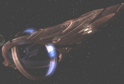

Vulcaniani - Classe senza nome |
|  |
Le astronavi di questa classe hanno uno scafo di colore rosso, piatto e
triangolare con un taglio circolare e una gondola di navigazione toroidale
montata su una struttura che le permette di muoversi.
| D'kyr | Shockwave - Part I | |
| Seleya Nave esplorativa con un equipaggio di 147 elementi. Entrata nella Distesa Delfica nel 2152 ed intrappolata in un campo di asteroidi ricco di trellio-D durate una missione di cartografia. È stata l'ultima nave su cui T'Pol ha prestato servizio prima di essere trasferita sulla Terra. Distrutta nel 2153 dopo che l'equipaggio è impazzito a causa del trellio-D. | Impulse | Il monte Seleya è un luogo sacro di Vulcano in cui la leggenda vuole sia morto Surak. |
| Tal'Kir Chiamata in aiuto dal Capitano Archer nel 2152 per fronteggiare un attacco volto ad impossessarsi della nave temporale. | Future Tense | |
| [Senza Nome] | Bounty |